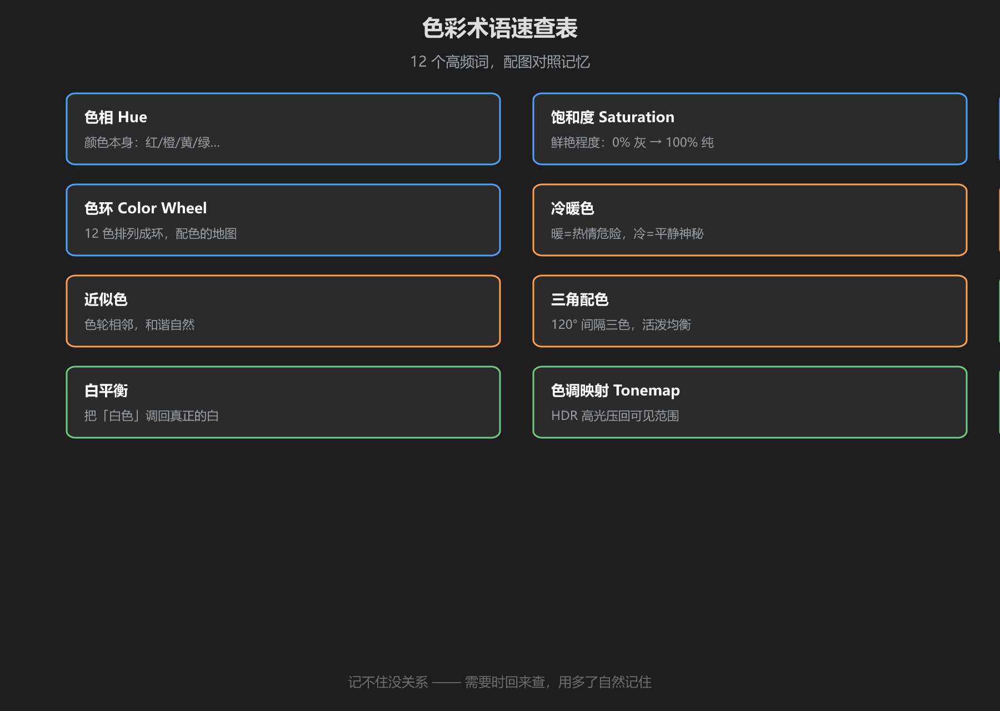
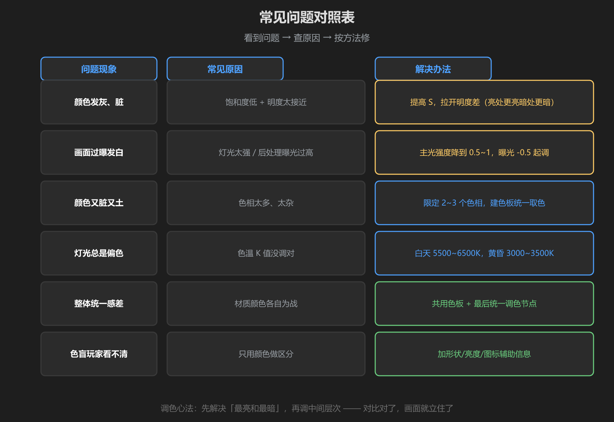
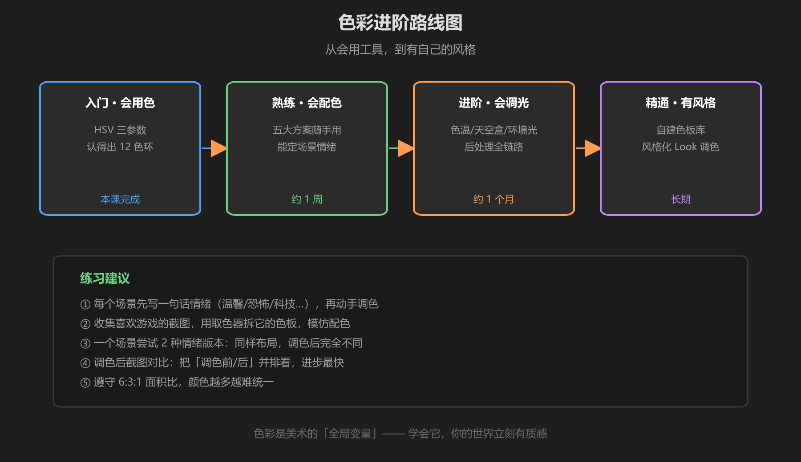

第 6 篇：速查表 & 常见问题
学完了？这一篇是「冰箱贴」：遇到问题翻这里，看不懂再回去翻对应章节。
1. 术语速查（12 个）

图：12 个高频术语一句话解释
| 术语 | 一句话 | 章节 |
|---|---|---|
| 色相 Hue | 颜色本身：红/橙/黄/绿… | 1 |
| 饱和度 Saturation | 鲜艳程度：0% 灰 → 100% 纯 | 1 |
| 明度 Value | 亮暗程度：0% 黑 → 100% 最亮 | 1 |
| 色环 Color Wheel | 12 色排成环，配色方案的地图 | 1 |
| 冷暖色 | 暖=热情危险，冷=平静神秘 | 3 |
| 互补色 | 色轮相对（180°），对比最强 | 2 |
| 近似色 | 色轮相邻，和谐自然 | 2 |
| 三角配色 | 120° 间隔三色，活泼均衡 | 2 |
| 色温 K 值 | 灯光冷暖：低=暖橙，高=冷蓝 | 4 |
| 白平衡 | 把「白色」调回真正的白 | 4 |
| 色调映射 Tonemap | HDR 高光压回可见范围（用 ACES） | 4 |
| 色板 Palette | 固定一组颜色，全局只用它 | 5 |
2. 常见问题对照表

图：问题 → 原因 → 解决办法，三列对照
| 问题现象 | 常见原因 | 解决办法 |
|---|---|---|
| 颜色发灰、脏 | 饱和度低 + 明度太接近 | 提高 S，拉开明度差 |
| 画面过曝发白 | 灯光太强 / 曝光过高 | 主光降到 0.5~1，曝光 -0.5 起调 |
| 颜色又脏又土 | 色相太多太杂 | 限 2~3 个色相，用色板统一取色 |
| 灯光总是偏色 | 色温 K 值没调对 | 白天 5500~6500K，黄昏 3000~3500K |
| 整体统一感差 | 材质颜色各自为战 | 共用色板 + 最后统一调色节点 |
| 色盲玩家看不清 | 只用颜色做区分 | 加形状/亮度/图标辅助信息 |
3. 进阶路线图

图：会用色 → 会配色 → 会调光 → 有自己的风格
接下来怎么练：
- 每做一个场景，先写一句情绪定位，再动手
- 收集喜欢游戏的截图，用取色器拆它的色板，模仿配色
- 同一个场景做两个情绪版本（温馨 vs 恐怖），只调色不换模型
- 调色前后截图并排对比，进步最快
最后送你一句话：颜色是场景的氛围开关，色板是统一感的保险丝。先情绪、后方案、再动手 —— 你的世界会立刻不一样。
课程完成清单
- 能说出 HSV、色环、冷暖、色温这些术语
- 遇到「颜色脏/过曝/偏色」能对应到原因和办法
- 完成第 5 篇露营场景，并截图对比过调色前后
- 确定了下一个小目标（拆一个游戏的色板？做双版本情绪对比？）